← 返回阅读库 · 原论文目录
论文讲解阅读文档 · 多模态语言模型 · v036
BLIP-2: Bootstrapping Language-Image Pre-training with Frozen Image Encoders and Large Language Models
视频时长 00:13:42；讲解文字 7,324 字符；提取讲解画面 35 张。按视频原顺序阅读，每段文字保留时间戳。
文字来自整段视频的自动语音转写，按自然停顿分段，并与 PPT / 论文页面 / 演示画面对齐。未将讲解压缩为摘要；术语、数字和口述公式请结合画面及原论文核对。 阅读稿已校正规范部分明确术语误识别；原始逐字稿和每处修改记录另行保留。
讲解画面为源视频截图（640×360），不是可编辑 PPT 文件。全片按每秒 2 帧扫描内容变化，逐步展开页保留；连续动画保留代表画面。清晰度受源视频限制。
下载完整资料包 · 含离线 HTML、PDF、Word、全部 PPT 画面和字幕。
原论文与材料
BLIP-2: Bootstrapping Language-Image Pre-training with Frozen Image Encoders and Large Language Models · 下载完整 PDF（13 页）
按时间阅读
00:00:00–00:00:12 · 画面 001
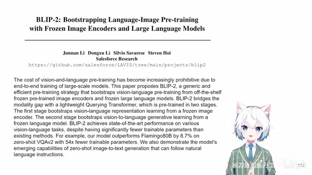
00:00:00–00:00:12 · 画面 001大家好啊，今天我们来快速梳理一篇论文 BLIP-2 Bootstrapping language image pretraining with frozen image encoders and large language models。这一篇很显然就是从 BLIP 进化而来的，因为我们现在已经进入到了一个 large language model 的时代，我们不再是希望从 image encoder 到 text encoder 都要我们自己去重头训练，明明现在已经有训练好的这些大的模型，我们为什么不能直接吃现成的呢？所以相对于前作，这个 BLIP 自己要去维护一个 image encoder，我们要去维护一个 text encoder
00:00:12–00:00:33 · 画面 002
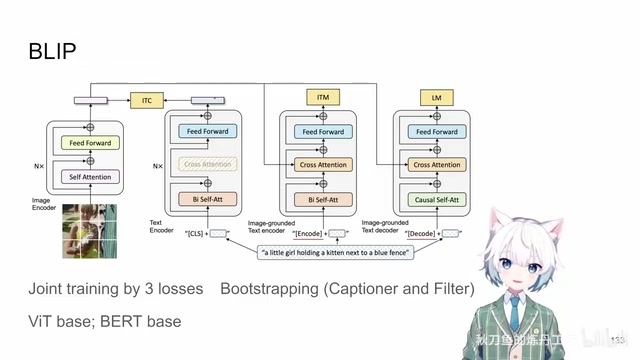
00:00:12–00:00:33 · 画面 00200:00:33–00:01:33 · 画面 003
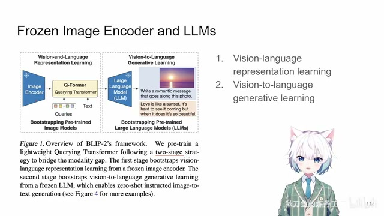
00:00:33–00:01:33 · 画面 003那本文的方法呢，就是我用一个训练好的 image encoder，那这个 encoder 我们就不要动它了，一个 large language model，它我们更不要动了，我们呢只需要训练好一个中间的一个 projection layer，具体呢它叫 Q-Former。有了这个 layer，把我们的图像的这些信息给它映射到投影到我们 language model 它能够处理的这些 token，站在两个巨人的肩膀上，只做中间商赚差价，那这样子呢来达到一个令人满意的结果那这个呢就是本文核心的思想。那为了实现这个目的呢，作者这里训练把它分为两个步骤，一个是做 Vision Language Representation Learning，另一个呢就是 Generative Learning。那第一步呢其实就是做一个 alignment，就是研究怎么样把我们这个 Frozen Image Encoder 这些 Image Feature 跟我们的这个 Text 尽量对齐
这是第一步，第二步我们真正把对齐好的这些 feature 接入到我们的 language model 里面，让它更好地去适应 language model，这个就是本文的一个大的思路。下面我们具体来看，首先第一步就是 pretrain
00:01:33–00:03:33 · 画面 004
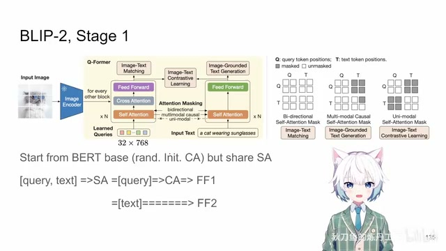
00:01:33–00:03:33 · 画面 004那在这一步呢你就能够看到很多前作的影子了。那这里呢首先最显著的区别在前作里面我们需要自己维持一个 image encoder，我们要自己去训练，现在呢我们直接拿一个已经预训练好的 image encoder，我们也不要动它，我一张图进来呢只从它里面拿出 feature 来就好了，这是一个最显著的设计的区别。那么Text Encoder 我们这里还是要维护的，这里做的还是从 BERT Base 开始，那么它有 12 层的 Transformer，在这里每一层随机初始化一个 Cross Attention Layer，同时把 Feed Forward Network 把它的参数再复制一份
这样子整个 12 层的 Transformer 里面，从 BertBase 开始，它有一份 Self-Attention 的权重，有一份随机初始化的 Cross-Attention 的权重，有两份 Feed-Forward 的权重，它们一开始都是从 BertBase 复制过来的。这个是 Q-Former，它自己本身结构上的设计，那么区别于前作 BLIP、BLIP 里面，它是 Shared Feed-Forward NetworkSelf-Attention Network，它们的权重不一样。
在本文里面正好反过来，feed forward 不一样，self attention 是一样的，这是一个最显著的区别。那么我们为什么要维护这样一个网络呢？我们要使用三个 loss 把这个文本和图像对齐起来，而且这次因为我们的 image encoder 是外面来的，这里我们的网络的设计也要做相应的更改你看到在视觉的部分，它是维护了 32 个 learnable 的 query，也就是 32 个 token，这 32 个 token 过 self-attention 过 cross-attention，在这个时候我们期望这 32 个 token 能够把我们图像里面的所有 token 的知识给它学习到给它提取出来，然后做 feedforward
一直一直做一层一层叠下去这样子呢你就能够把图像的 feature 压缩到这 32 个 token 里面这个呢是图像部分相对于前作最大的更改而文本的部分呢相对容易一点你的一句话前面加上 classification token 过 self-attention 过 feedforward 一层层走下去然后你如果想提这个文本的这句话的 feature 对吧就把 classification 那个 token 的位置上的
00:03:33–00:03:50 · 画面 005
00:03:33–00:03:50 · 画面 005这个 embedding 拿出来做你想做的事情就好了那这是如果我们分开处理图像和文本它的操作但是实际上呢我们有很多任务是想把图像和文本一起处理那这个时候的操作呢就是这个网络很特别的地方我们首先呢把我们的这个 query 和这个 text 前面加了这个 classification token 的这个 text 整个它这一个组成一长范序列
00:03:50–00:03:51 · 画面 006
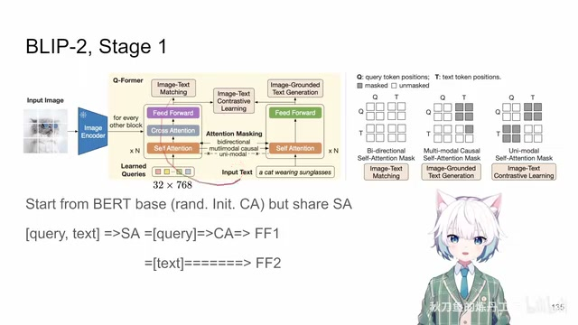
00:03:50–00:03:51 · 画面 00600:03:51–00:04:57 · 画面 007
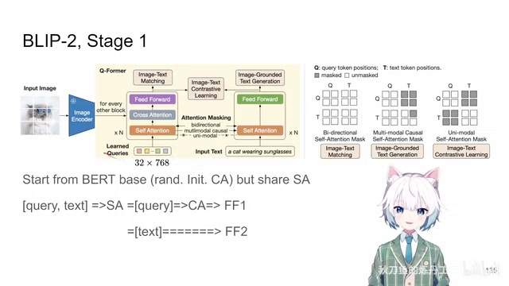
00:03:51–00:04:57 · 画面 007那么因为我们之前说了所有的 transformer layer 里面的 self-attention 它们的权重都是相同的所以这一整个长串的序列你要过 self-attention 这里有一个操作的空间就是我在过 self-attention 的时候我究竟谁和谁能够相互 attend 这个就需要根据你想要做的不同的任务来去单独的控制这个我们会结合后面具体的 loss 来说，那这个 self-attention 过完之后呢，我们对于这个 image-query 这 32 个 token，我们会把它单独过一个 cross-attention，在这个 cross-attention 的环节，它跟 image 的这些原始的 token 相互做 cross-attention，然后呢过它自己的这个 feed-forward network，剩下来 32 个这个 query token 在这里。
而文本的这个 token，我们直接过它自己的 feed forward network，这样子过完这一层，你又是有一个 query 加 text 这样一串序列，transformer 它的序列长度是不变的，你就这样一层一层的做下去，这个是本文网络结构上我们不在训练 image encoder 之后它的变化，但是 BLIP 系列它做的 loss 一直是从前作延续下来了，我们下面具体来看。
00:04:57–00:04:59 · 画面 008
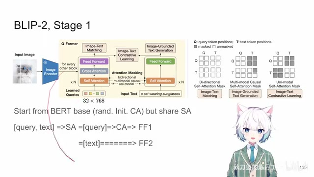
00:04:57–00:04:59 · 画面 00800:04:59–00:05:07 · 画面 009
00:04:59–00:05:07 · 画面 00900:05:07–00:06:53 · 画面 010
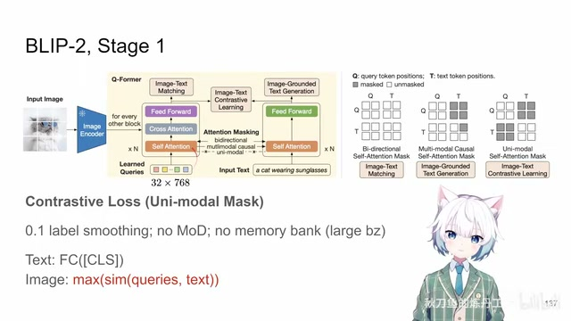
00:05:07–00:06:53 · 画面 010首先第一个就是 contrastive loss 对吧，匹配的图像的 feature 跟匹配的文本的 feature 应该相近，不匹配的就要相互远离，那么在这一作中，首先 label smoothing 还是保留下来了，但是我们取消了 memory bank。取消了 momentum distillation，这也就意味着我们不需要再维护一个 momentum network，然后 memory bank 也是不需要了，为什么，因为我们的 image encoder 是一个训练好的，我们不需要去维护它的一系列训练相关的东西。
所以我们可以把 Batch Size 开得很大同时马上又有一个新的问题了在前作里面我们有 Image Encoder 我直接拿这个 Classification Token 出来一个 Token 就能够代表整个一张图但是现在我们有 32 个 Query Token 一起去表示这一张图我究竟用哪一个 Token 去跟我们的文本做匹配呢这里做的方法就是我每一个 Query 最后出来的 Token都跟这个文本算一下这个 cos similarity 那么当然也是有 projection normalization 这些东西对吧那么你 32 个 token 都跟这个文本的 classification token 都投影过来的这个 embedding 来做这个 similarity 然后呢选这个 similarity 最大的这个 query 作为你的这个 token 来代表你这一张图像
然后呢，两个 token 该相似的相似，该远离的远离，这样子就好了，但是呢这里还有一个细节要注意，我们既然是要做 contrastive learning，我们不希望我们的图像和文本他们在这个 loss 之前有任何的交互，不然你信息都泄露出去了，那这个时候我们就要考虑在什么时刻这两串 token 他们会发生相互的关系呢，会有信息的流动呢，答案就在这个 self-attention 里面，那怎么样规避这个事情呢，我们就要。
更改这个 self-attention 的 mask，具体怎么更改就是像这样，你的 query 只允许和自己的 query 他们做 self-attention，图像跟图像玩，文本呢跟文本玩，那他们图像和文本之间不能做 self-attention，那给定这样一个 mask，我们就轻松的把这两组信息给它隔离开了，最后大家在这个 contrastive loss 这里界面就好了，这是第一个 contrastive loss。
00:06:53–00:06:54 · 画面 011
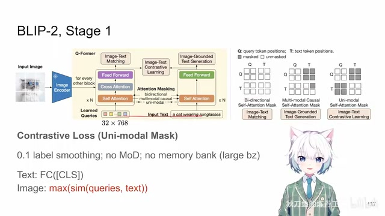
00:06:53–00:06:54 · 画面 01100:06:54–00:07:13 · 画面 012
00:06:54–00:07:13 · 画面 01200:07:13–00:07:32 · 画面 013
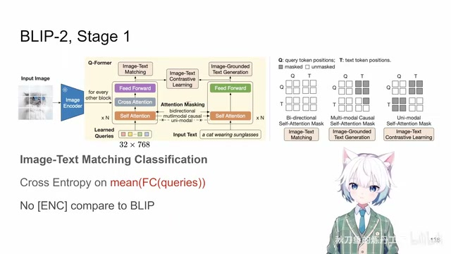
00:07:13–00:07:32 · 画面 013那么第二个呢是这个 image text matching，一个 classifier 来判断我的这个图像和文本是不是匹配的。但是呢，我们这里有一点小的变化，还是你的 image token 现在由 32 个 query 来表示了。我这里还有一串文本的 token。那这么多 token 我去选谁来代表我的这个图像和文本这个匹配的对呢？那这里呢，作者的策略就是我选择 32 个 query 对应的这些 token 就是
00:07:32–00:07:36 · 画面 014
00:07:32–00:07:36 · 画面 01400:07:36–00:07:37 · 画面 015
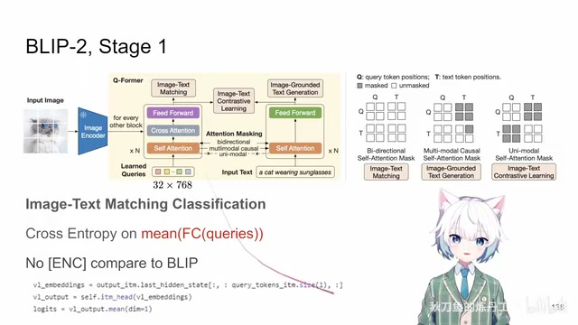
00:07:36–00:07:37 · 画面 01500:07:37–00:07:39 · 画面 016
00:07:37–00:07:39 · 画面 016这里。然后呢，我把这些 token 都送到这个 linear projection 里面。然后呢，把这个出来的结果求个平均，用这个平均后的 logits 来再算这个 cross entropy。那这个呢是你区别于之前多个 token 的一个小的更改
00:07:39–00:07:48 · 画面 017
00:07:39–00:07:48 · 画面 01700:07:48–00:07:59 · 画面 018
00:07:48–00:07:59 · 画面 018同时呢，对比 BLIP 你在做这个 Image-Text Matching 的时候，那 BLIP 里面你要把一开始的 classification token 这里 Text 开头的 classification token 换成 encode token，这里呢现在呢 BLIP-2 呢你就不用换了，那么当然也是因为你最后的 feature 就没有从这走嘛，这是一个点，再就是我在做这个 classification 的时候，我当然是希望我结合图像和文本的信息，两边我都要看，他们两个在怎么交流我都无所谓了对吧。
00:07:59–00:08:02 · 画面 019
00:07:59–00:08:02 · 画面 01900:08:02–00:08:23 · 画面 020
00:08:02–00:08:23 · 画面 020所以这个时候 self-attention 它的 mask 就是全的，大家都可以相互做 attention，你们怎么方便怎么来帮助我们更好地去判断这个图像和文本它们是不是匹配的。这个是 classification loss
00:08:23–00:08:27 · 画面 021
00:08:23–00:08:27 · 画面 02100:08:27–00:08:34 · 画面 022
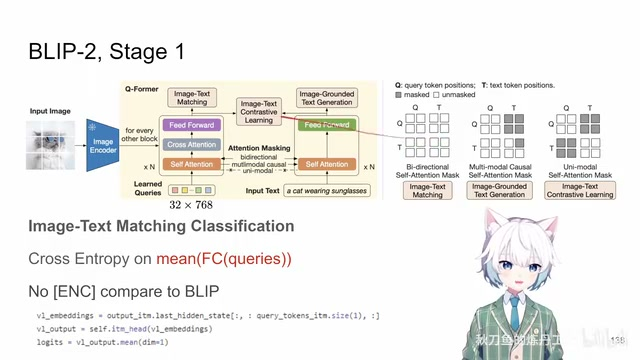
00:08:27–00:08:34 · 画面 02200:08:34–00:09:40 · 画面 023
00:08:34–00:09:40 · 画面 023那么再下下呢是这个 text generation loss 啊，这个东西在最一开始的形态是一个 bert 样的东西啊，你的输入一句话随这个随机 mask out 要一部分，然后去尝试预测这些被 mask 掉的这个 token。那么在 blip 的时候呢，他就改变了这个 loss 啊，他改变了 loss他做的任务呢就是 auto regressive 的 next token prediction，首先呢你这一句话的开头换成一个 decode token，区别于之前的这个 classification token，这是一个 decode token，然后呢你做 next token prediction，也就是说你预测出来的 token 是。
相比于出入的 token 是向前移动了一位的，然后呢你 self-attention 里面还有这个 causal mask 对吧，这些东西来模仿你这个 auto regressive 生成的过程啊，这个是 blip，那到 blip2 呢他用的 loss 这个 formulation 跟 blip 是一样的，只不过这个时候呢我们有 32 个跟 image 相关的这个 query 这样的 token 啊，这 32 个 token 就加在了我们原始的这些文本的 token 的前面。
我们要模型从拿到这 32 个 querytoken 加上这个 decode token 开始，然后一个 token 一个 token 的生成后面的文本。而因为这些 querytoken 的特性呢，你的这个 causal mask 也要做相应的更改啊。因为我一开始能看到一整张图，所以呢 query 他们之间 token 是相互可以做 self attention 的啊。你后面的 text 都可以看到前面的 image，所以这个 text 你可以对这些 query 做 attention。但是呢 text 啊，未来的这些 text 他们还是要有一个 causal mask 对吧？你你当前的 text
00:09:40–00:09:41 · 画面 024
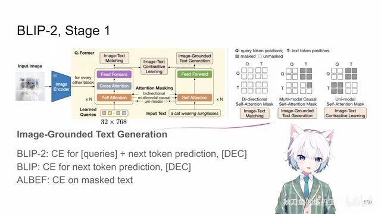
00:09:40–00:09:41 · 画面 02400:09:41–00:10:29 · 画面 025
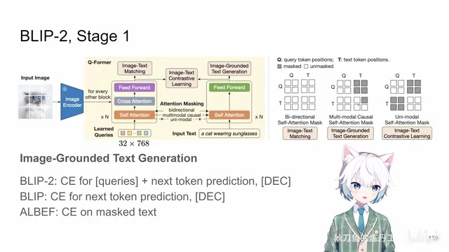
00:09:41–00:10:29 · 画面 025看不到未来的 Text Token。然后你的图像也不可能看到未来的 Tax 对吧？所以有这样一个形状的 Causal Mask。这是他在 self-attention 时候处理。有了这样的 loss 训练出来，理论上来说你要是真的饿极了的话，你就可以用网络也是一遍一遍的又把文本给它生成出来了。当然现在我们既然有这么强大的 language model 了，我们为什么还要局限于这样一个小的网络对吧？我们更多要考虑怎么样把这些信息交给 language model 让他去处理就好
00:10:29–00:11:22 · 画面 026
00:10:29–00:11:22 · 画面 026那么这个呢就来到我们第二个阶段，就是 generative pretraining。这个阶段方法呢也很简单，就是全连接层把这些 query token 放到 language model 里面。至于 text 是什么，直接交给 language model 去处理对吧？我们就不要用这个 Q-Former 来做了。那对于这种像 opt 只有 decoder 的结构，就是一整个下来全是 transformer 的这样一个结构，那我就直接把这个 query token 投影过后作为一个前缀
加到我的 language model 里面。然后呢你就按照正常训练 language model 的方法去训练这个 Q-Former 还有这个中间的 connector 就好了。language model 和 image encoder 都一直都是不动的。那第二种呢就是我 language model 既有 encoder 又有 decoder 的情况，那这个时候同样呢还是把我们这些 query 经过这样一个投影作为前缀加到我们的这个文本上就像额外的单词一样续在原来的文本的这个 sequence 前面就好了
那这个是作者的设计好的
00:11:22–00:11:23 · 画面 027
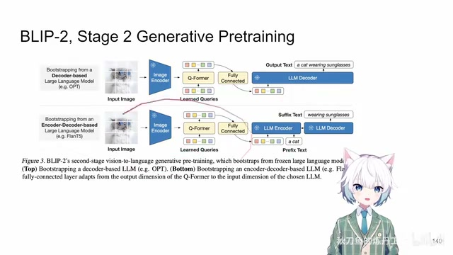
00:11:22–00:11:23 · 画面 027那么以上就是本文主要的技术贡献了
00:11:23–00:11:43 · 画面 028
00:11:23–00:11:43 · 画面 028两个阶段第一个阶段先用三个 loss把 Q-Former 训练好让 query 这个东西能够在 image token 中提取一些对文本有用的信息那么第二个阶段呢把这个东西接到一个 language model 里面然后呢把这个 connector 和这个 Q-Former一起再搞一遍这个呢就是本文的技术路线那下面呢我们也正好借这个机会
00:11:43–00:12:48 · 画面 029
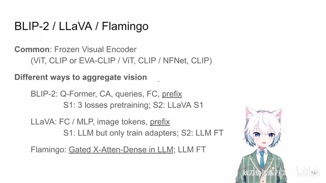
00:11:43–00:12:48 · 画面 029把当时那个年代典型的 vision-language model它们的方法简单的对比一下那这里呢我们就拿我们之前介绍过的LLaVA 和 flamingo两个方法那么这三个方法共同的地方就是它们都是用了一个frozen 的 visual encoder还具体来说呢都是 clip只不过 flamingo 这里呢它用的是 normalize free resnet因为它比 vit 的效果更好当然还有一个点就是它们后面都接一个 large language model对吧那么但是不同的地方
就是在于它们怎么样把这个 vision 这个东西接入到这个 language model 里面BLIP-2 我们讲了是吧Q-Former通过维护一系列 query然后呢再通过 cross attention把 image token 里面的信息弄到 query 里面然后呢再通过 projection layer把这些 query作为文本的一个前缀送到我们 language model 里面去处理它是训练有两个阶段那么 LLaVA 更直接直接把这个 clip 里面的 feature
一个个 token直接是全连接层作为文本的前缀扔到 languagemodel 里面就好了这是 LLaVA然后两个阶段训练第一个阶段只训练中间的 adapter第二个阶段是把 languagemodel 和 adapter一起做 fine-tuning
00:12:48–00:12:49 · 画面 030
00:12:48–00:12:49 · 画面 030这是 LLaVA Flamingo 它图像和文本结合的方法
00:12:49–00:13:13 · 画面 031
00:12:49–00:13:13 · 画面 031就更加复杂一点虽然它本质上还是 attention只不过就是加在你的 languagemodel 里面的每一层上然后是一个 gated attention你从 languagemodel 开始训逐渐逐渐的增加你从 vision 过来的信号的权重这个是它结合的方法。然后它的训练就纯直接了。直接你 language model fine-tune 就好
00:13:13–00:13:24 · 画面 032
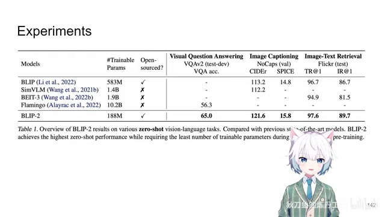
00:13:13–00:13:24 · 画面 032那看一眼实验对吧？BLIP 的特色就是你不仅能够做生成，同时呢也可以提 image text 这些 feature，用这些 feature 来搞事情。所以它优势的区间在于一个模型能够把这些任务都解决了。那么当然原文里面还有更多详细的实验还有很多各自的例子啊，感兴趣的朋友呢非常推荐你到原文去查看。那读到 BLIP-2 我们了解这个整个技术发展的脉络也算是赶到当前版本的前一两个版本了。那么感谢您的收看，请多多指点
00:13:24–00:13:25 · 画面 033
00:13:24–00:13:25 · 画面 03300:13:25–00:13:42 · 画面 034
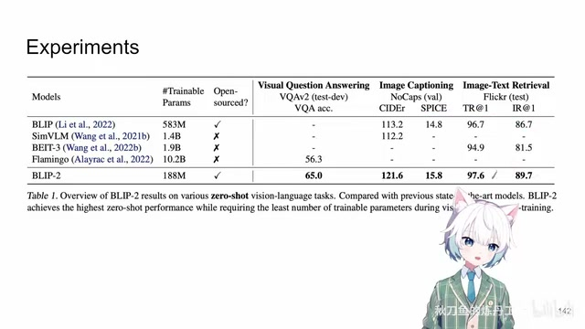
00:13:25–00:13:42 · 画面 03400:13:42–00:13:42 · 画面 035
00:13:42–00:13:42 · 画面 035转写与来源说明 · 1 个自动复核提示
保留 111 个原始语音片段，1 个片段触发自动复核提示。提示仅用于定位可能的术语、重复或识别问题，不等于已确认错误。
讲解画面为源视频截图（640×360），不是可编辑 PPT 文件。全片按每秒 2 帧扫描内容变化，逐步展开页保留；连续动画保留代表画面。清晰度受源视频限制。
原视频：paper/合集_2026-10-16_多模态语言模型/[论文速览]BLIP-2 ...with Frozen Image Encoders and Large Language Models[2301.12597].mp4
SHA-256：88b096ebe96ff50fbc7e8a3d2c2d10eda776eb5eaf947eba97d7441a42ceb363
再通过 projection layer
全文按视频语音与画面制作。原论文可从上方链接下载；完整资料包保留全文、原始逐字稿、字幕和校对记录。